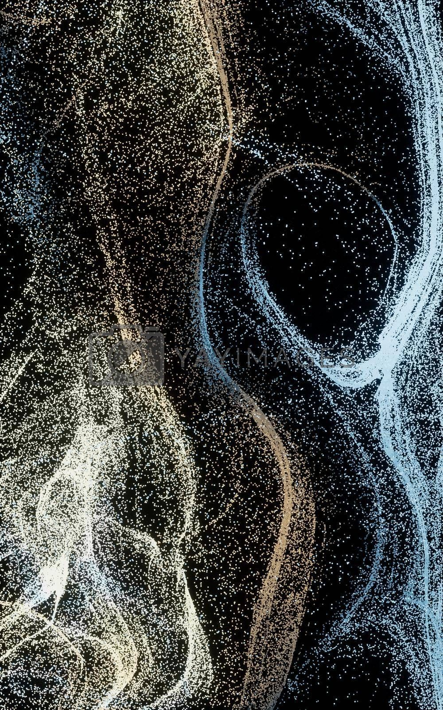

一个人的数字生活志
GU YAN · STORY

这一页，是留给「正经工作之外」的——AI、画报、生活碎片，和那些不务正业的快乐。
把复杂讲简单，把冰冷做温热，把日子过成作品。
AI、技术、生活，都不该是黑话。能用大白话讲明白的，绝不上术语。
数据是冷的，人是热的。我做的一切，是想让专业多一点人情味。
认真生活，认真折腾。每一天都值得被记录、被打磨、被分享。
生活、成长、兴趣、AI 折腾——什么都可以往里丢。
AI 折腾的过程和作品，点开看我是怎么玩的。
从 prompt 到成图的完整记录。
把话说清楚，AI 才听得懂。
让重复的事，自动发生。
把 scattered 的自己，收拢起来。
团队、培训、经营——顺手做的事业。
从一个人，到带一支队伍。见过太多人间冷暖，也练出了把复杂讲简单的本事。
在后台看过整个业务的运转，才明白前端每一句话的分量。
把自己的经验变成别人的起点，是我最享受的事之一。
日报、科普、课程——让 AI 做重复，让人做温度。